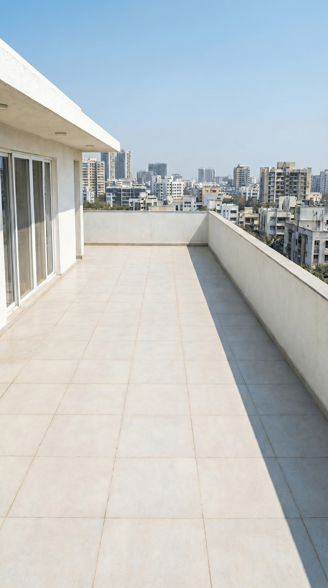

Creative Editor AI Generalist
Transforming high-level strategy into data-driven execution — from initial briefs to publishing content that drives real results.
Executing end-to-end campaigns driven by continuous testing, precise analytics, and structured workflows.
I'm a Digital Marketing Associate, Creative Editor, and AI Generalist — using SEO, paid ads, and AI-generated content to drive real results.
My edge: I use tools like GA4, Search Console, Gemini, and Photoshop to own the full pipeline — from campaign strategy to production-ready creative.
From keyword research and ad setup to AI image generation and video editing — every output follows a structured, tool-driven pipeline. GA4, Search Console, Gemini, Whisk, Photoshop, and Premiere Pro all have a defined role.
Raw generation is only the foundation. True quality comes from granular control.
Transforming high-fidelity images into dynamic visual narratives and live interactive prototypes.

Feeding separated layers into Kling AI or Gemini video with precise motion prompts. The AI animates each layer independently for a natural parallax effect.
Testing variations of motion prompts to specify speed and camera drift. Subtle, organic movement is prioritized over robotic or floaty generation.
Grading and formatting the final clip in Premiere Pro and After Effects. Every edit is specifically tailored for Reels, ads, or stories to maximize engagement.
An experimental pipeline to fully generate dynamic, standard, and 3D websites using video interpolation and advanced LLMs.
"I am incredibly passionate about the intersection of visual design and artificial intelligence. It allows us to scale creativity without losing fidelity, and I am dedicated to continuously pushing the boundaries of what this technology can build."